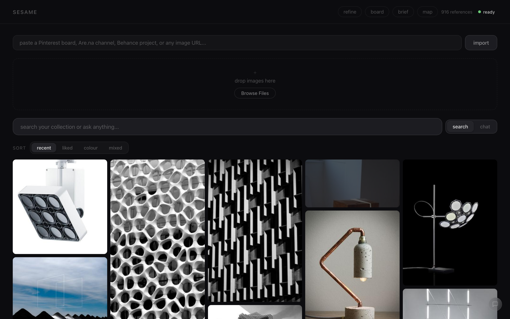
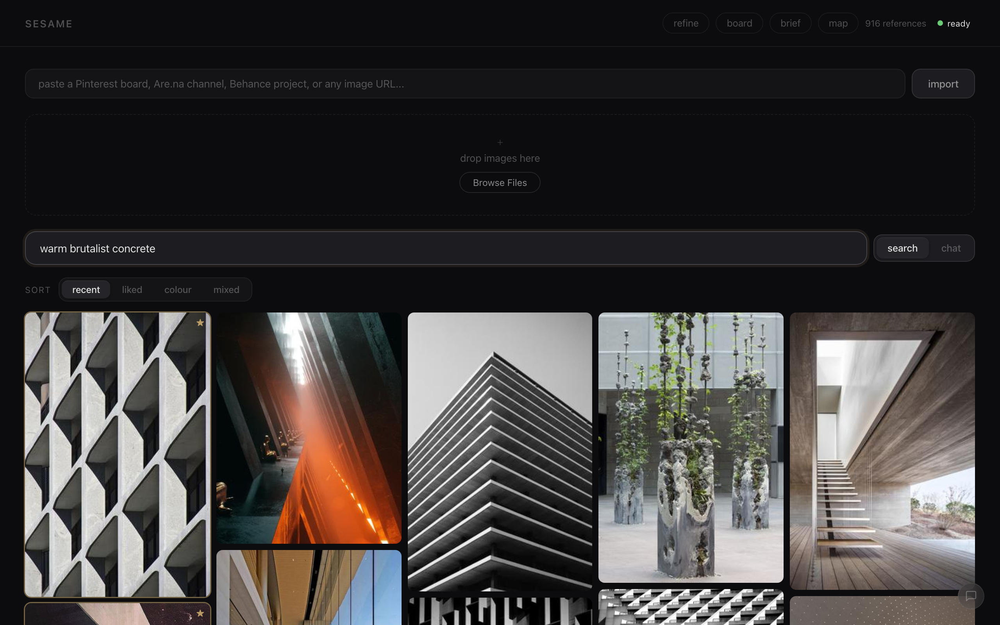
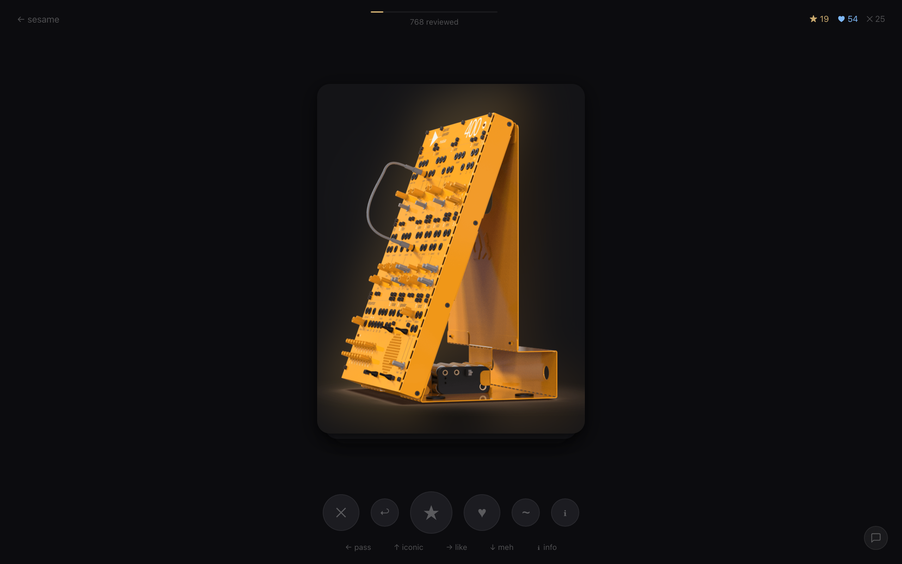
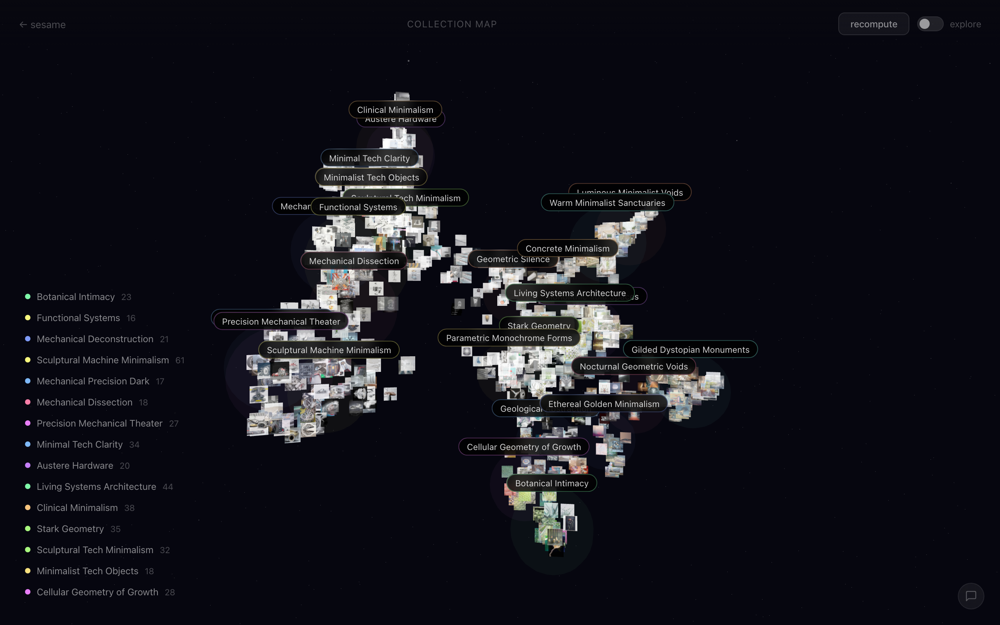
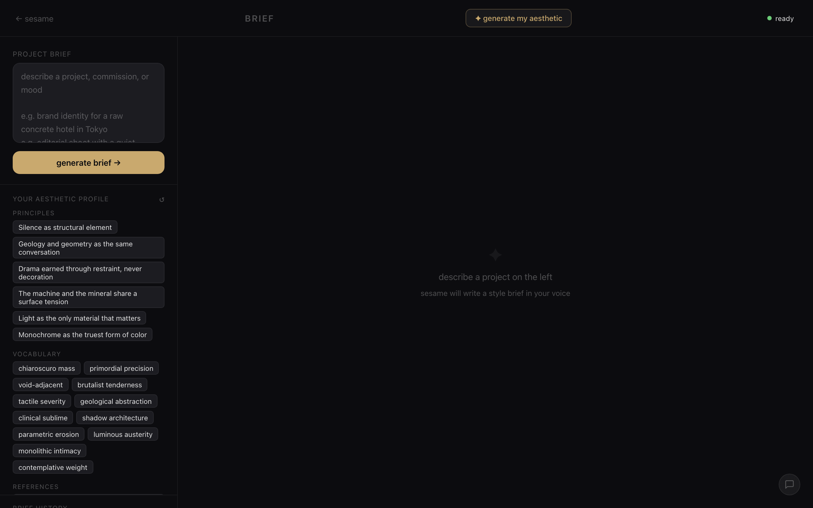
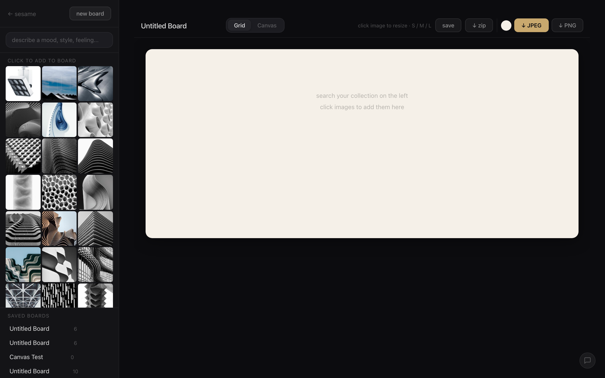
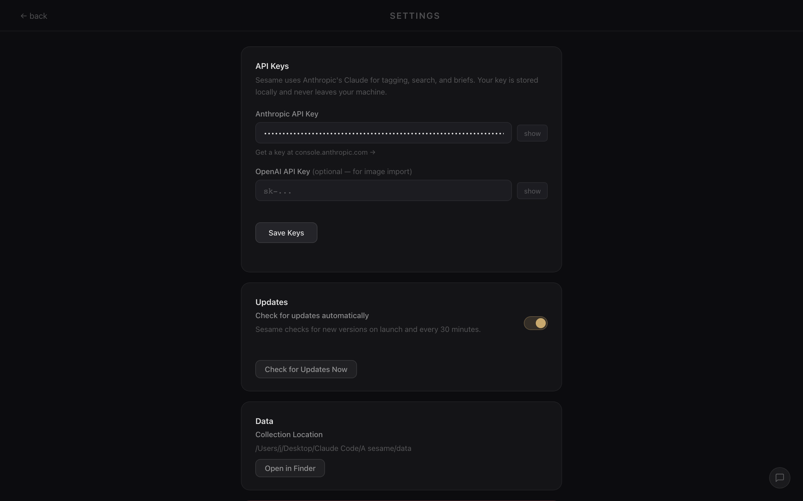

Sesame is a native desktop application that helps designers organise and understand their visual reference collections. Import images from anywhere, search them by description, and let the app surface patterns in your taste you might not have noticed.
Everything runs locally — no accounts, no cloud, no images leave the machine. I built it to solve a problem I kept hitting in my own design work: references scattered across platforms with no way to search or make sense of them.
This project applied the same rapid-prototyping and systems-thinking skills I use in physical product design to a software context — scoping a real problem, building a working solution, and shipping it under tight time constraints.
The problem.
01 / PROBLEMDesigners collect visual inspiration across many platforms, but these collections end up scattered, unsearchable, and disconnected from the actual design process. There's no good way to ask "find me images with that warm brutalist feeling" across everything you've saved.
Existing tools treat inspiration as a static archive. Sesame treats it as a living, searchable resource that becomes more useful the more you engage with it.
What it does.
02 / FEATURESNatural language search
Describe what you're looking for in plain language and the app returns visually relevant results — no manual tagging required. CLIP embeddings are generated on-device when images are imported.

Refine view
A full-screen view for rapidly reviewing your collection. The app learns from your responses over time, personalising results to your taste.

Visual mapping
An interactive 3D visualisation that reveals how your references relate to each other in embedding space, making implicit aesthetic patterns visible.

Style briefs
Generates written design briefs grounded in your actual collection — principles, vocabulary, and direction based on what you've curated, not generic labels.

Moodboard builder
Arrange selected images on a canvas and export presentation-ready boards directly from your curated references.

Design approach.
03 / DESIGNPrivacy-first. Designer reference collections are personal and often contain copyrighted material. Everything runs on-device — no accounts, no cloud uploads, no data leaves the machine.
Minimal interface. Dark background, warm accent, system typography — the UI stays out of the way and keeps focus on the images. A consistent design system ensures coherence across all views.

Skills applied.
04 / SKILLSThis project applied the same methodology I use in physical product design — just in a different medium:
- Rapid prototyping under constraints. Scoping, building, and shipping a working product on a tight self-imposed deadline — the same discipline used in fabrication sprints and client deliverables.
- Systems thinking. Designing interconnected components where each part informs the next — the same approach used in physical product systems.
- User-centred problem solving. Built around a real workflow problem, shaped by direct experience as a designer.
- End-to-end delivery. Owning every layer from backend to interface to packaging — the same full-ownership approach I bring to physical product work.
Building Sesame reinforced something I've found across all my work: the best outcomes come from treating constraints as design drivers. A tight timeline forced ruthless prioritisation. Technical constraints forced cleaner decisions. The result is a focused tool that does what it needs to and nothing more.
This project confirmed that the skills I've developed through physical product design — scoping problems, prototyping fast, and shipping complete deliverables — apply directly in a software context. The medium changes; the methodology doesn't.